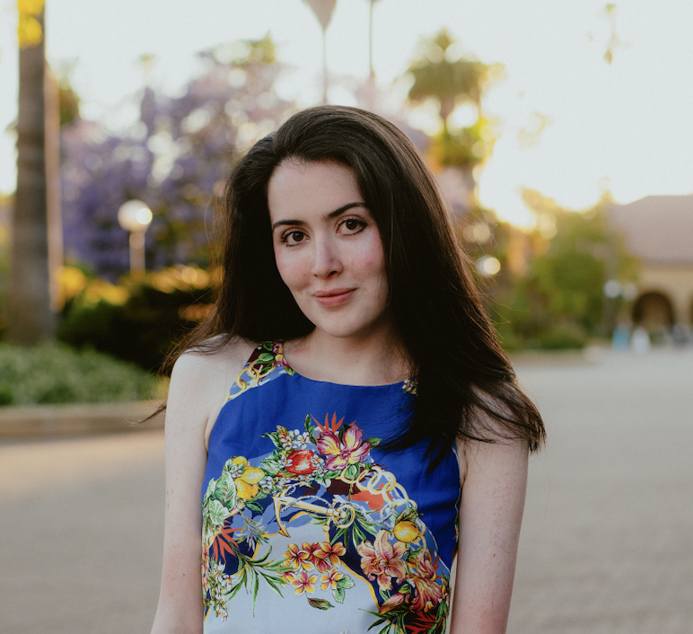

About Me
I build systems at the intersection of mathematics, machine learning, and real-world decision-making — from probabilistic research at Stanford to low-latency trading infrastructure.
Currently completing a Master’s in Computer Science after a Bachelor’s in Mathematics, both at Stanford, where I split my time between research, teaching, and mentoring.
Academics
Education
Degrees and areas of focus at Stanford University.
Undergraduate
Bachelors of Science, Mathematics
Stanford University, Stanford, CA
September 2021 – June 2025
Graduate
Masters of Science, Computer Science (Artificial Intelligence Track)
Stanford University, Stanford, CA
September 2025 – June 2026
Career
Experience
A timeline of research, teaching, and engineering roles across Stanford and industry.
Statistical Modeling & Inference Researcher at Stanford
Conducted research on latent-variable and probabilistic models for uncertainty quantification in high-dimensional, noisy datasets. Developed and implemented Bayesian inference frameworks and variational optimization algorithms to uncover hidden structure and mitigate estimation bias in predictive modeling. Leveraged stochastic process theory, information-theoretic measures, and causal inference techniques to enhance model identifiability, interpretability, and robustness in complex real-world systems.
Machine Learning Researcher at Stanford CS Department
Developed a contrastive deep learning model to identify regulatory differences in chromatin accessibility across normal, tumor, and metastatic states. By leveraging CNN architectures like ChromBPNet, applied advanced machine learning techniques to enhance the precision of sequence-to-function predictions, with a focus on refining computational models for disease progression, particularly in thyroid cancer.
Teaching Assistant, CS227b: General Game Playing at Stanford CS Department
Assisted in teaching a graduate-level AI course on the design of autonomous agents capable of strategic reasoning in novel environments. Guided students in applying methods from automated reasoning, symbolic knowledge representation, adversarial and heuristic search, resource-bounded planning, and algorithmic game theory to develop general-purpose intelligence systems that learn and execute strategies from formal game descriptions.
Computational Modeling Researcher at Stanford Translational AI Lab
Conducted interdisciplinary research uniting artificial intelligence, probabilistic modeling, and computational medicine. Developed and deployed deep learning architectures for computer vision and medical imaging, integrating probabilistic inference to quantify uncertainty and extract high-fidelity biomarkers. Leveraged Bayesian and data-driven modeling frameworks to improve diagnostic prediction, enhance model interpretability, and advance precision healthcare through statistically robust AI systems.
Google Ads SWE Intern at Google
Developed a high-performance, production-scale interface for a real-time fraud detection platform within Google Ads, leveraging TypeScript, HTML, and CSS to engineer modular, scalable, and latency-optimized components. Collaborated with cross-functional teams to translate complex fraud analytics pipelines and anomaly detection workflows into intuitive, data-rich visual systems, enhancing usability, reliability, and decision speed across a platform processing billions of ad transactions daily.
Projects
Featured projects
A glimpse into the range of projects I’ve worked on.
Autonomous Agent Reliability & Assurance Platform
GPT-2 Fine-Tuning
LLM Agent with Tool Use, Memory, and Retrieval
Entrepreneurship
Ventures & initiatives.
A rotating look at founding roles and entrepreneurial initiatives.
2022 – 2024
Founder, Computer Science Education Company
Founded a computer science education and technical mentoring company after identifying an unmet demand for advanced software engineering and artificial intelligence instruction. Designed and delivered individualized training on modern programming frameworks, machine learning, and emerging technologies for students and industry professionals, including engineers from leading technology companies such as Google and Meta. Developed tailored curricula bridging theoretical computer science with practical software development, enabling clients to rapidly acquire and apply new technical skills.
2026 – Present
Founder, Stealth FinTech Startup
Founded a stealth fintech venture focused on applying artificial intelligence and modern software infrastructure to improve financial services and user decision-making. Led product strategy, technical architecture, and full-stack engineering, designing scalable backend systems, intelligent automation workflows, and secure data pipelines while driving rapid product development from concept through prototype. Collaborated with early users and industry stakeholders to validate product-market fit and refine the platform based on iterative customer feedback.
2025 – 2026
Co-Founder & CTO, AI Interview Platform
Co-founded an AI-powered interview platform that conducts adaptive voice and text interviews using customizable conversational agents, enabling organizations to tailor interviewer tone, communication style, and evaluation criteria to specific hiring workflows. Architected and developed the platform’s MVP, implementing real-time conversational AI, configurable prompting pipelines, automated interview summarization, and structured candidate analysis. Collaborated on investor fundraising and product strategy, presenting the company to leading venture capital firms, with the platform attracting interest from Y Combinator and multiple early-stage investors.
2025 – 2026
Technology & Entrepreneurship Fellow, Stanford University
Selected to participate in Professor Charles Eesley’s Technology and Entrepreneurship Seminar, an invitation-based program connecting high-potential founders with leading entrepreneurs and venture investors. Engaged in advanced discussions on venture creation, startup strategy, fundraising, and technology commercialization while receiving mentorship from experienced founders and investors. Built relationships within Stanford’s entrepreneurial ecosystem through regular interactions with venture capitalists, startup executives, and emerging technology founders.
Background
Technical Skills & Background
Languages, frameworks, and domains I work across.
Hover & drag to explore
Community Outreach
Mentoring students in mathematics, computer science, and research.
Graduate Mentor
Mentored undergraduate students pursuing mathematics and related quantitative disciplines, providing academic guidance, career mentorship, and support in navigating research opportunities and graduate education. Fostered an inclusive community through one-on-one mentoring, panel discussions, and collaborative events, helping students develop confidence in advanced mathematics, problem-solving, and quantitative research.
Outreach Mentor
Mentored high school students from historically underrepresented backgrounds through Stanford Women in Computer Science outreach initiatives in partnership with local schools and nonprofit organizations. Supported the delivery of computer science curricula, guided students through programming and computational thinking concepts, and cultivated long-term mentoring relationships to encourage continued participation in STEM and technology.
Mathematics Department Tutor & Grader
Provide advanced instruction in theoretical and applied mathematics through Stanford’s Mathematics Department. Lead students through rigorous explorations of vector space theory, multivariable analysis, and differential systems, with specialized focus on spectral and matrix theory, eigenvalue and singular value decomposition (SVD), dimensionality reduction, proof construction, and the analysis of linear operators and dynamical systems. Also worked under Professor Lernik Assarian, grading course material on ordinary differential equations; under Professor Mark Lucianovic, grading differential calculus; and under Professor Wojciech Wieczorek, grading integral calculus.